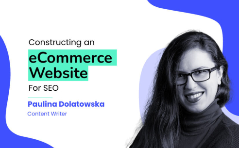
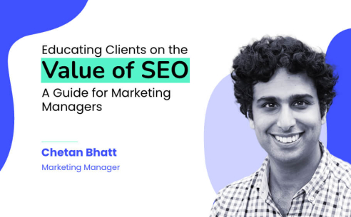

Optimising your content to rank on Google can really boost your visibility in the SERPs. Find out how to build an SEO strategy, what content hubs are and how you can create them using various methods.
SEO Content Strategy: How to Create Content Hubs That Rank

Author: Estelle Slabbert, Senior Content Writer

Content is *still* king. Reading Bill Gates’ visionary article from more than two decades ago makes you realise this man indeed foresaw the future of all things relating to the wonderful World Wide Web.
Have you been in the digital marketing game over the last 20 years? In that case, you’ll agree that we’ve had our fair share of run-around as we constantly try to stay one step ahead of every significant algorithmic update by the search engine giants.
Being a digital marketer meant constantly finding the golden thread between what users want vs what Google demands. The good news for good SEOs is that Google wants what your customers want too. Pleasing your online clientele is what they are all about.
So if you want to keep Google happy (and adorn their first page on the SERPs), then focus on what your users want. That is ultimately what they are after too.
So, this begs the question: What do users want in 2022 and beyond?
This article will focus on the latest content trends and how you can leverage these to create a comprehensive SEO content strategy. The focus is on building content hubs (pillar pages, cluster articles, and lead generators), how to do it, and how to ensure they perform.
But first: Not all content is helpful
This has to be said before we dive deeper.
Creating content for your website just to saturate it with keywords is not a strategy to pursue.
As Google becomes smarter about semantics, your keyword vs quality content strategy will have to level up. You must match a superb content strategy with a meaningful keyword mapping plan. Irrelevant keyword stuffing in unhelpful articles will only drag your website down more spots on the SERP.
❛We need to change this mindset. We need to start with the searcher, think about what they are looking for, consider what they want to achieve, and then create our content around that.❜ —Semrush
Content must be well thought out and form part of a bigger picture (keyword mapping in the content hub) that answers all queries related to a specific topic. It must be helpful. If it’s not, don’t waste more of your precious time creating it.
Get back to the drawing board and plan a content strategy that makes sense, flows into each other naturally (internal link profile), and is helpful to your potential searchers.
What is an internal link profile?
The internal link profile of a website is very important for SEO. It tells search engines how well the website is interlinked and how easy it is to navigate. A well-structured website with a good internal link profile will be ranked higher in search results than a website with a poor internal link profile.
There are a few things you can do to make sure your website has a good internal link profile.
- Ensure your site is well-structured and easy to navigate.
- Use keyword-rich anchor text for your links.
- Link to important and relevant pages on your site from your home and pillar pages.
- Add new content regularly and link to it from other pages on your site.
What does helpful content look like?
In layman’s terms: Consumers are tired of reading nonsensical and duplicated information. There is no better way to put it. Hence, Google prevents nonsense from landing on the first page of their search results.
Have you ever clicked on an article with the title: ‘SEO Tips’ only to find the ramblings of a novice copywriter about how to become an SEO?
It is frustrating and a waste of your valuable reader’s time. Sounds harsh? Every reader on the other side of the screen gets frustrated too.
The content for a blog post about SEO Tips should be an expertly written, authoritative, and trusted (*E.A.T.) listicle or in-depth article with proven tactics (*social proof) for improving search rankings.
Otherwise, the writer missed the most critical tip about SEO content: Matching search INTENT.
*E.A.T. is a set of principles used by Google to measure the quality of website content. It has to show the Expertise, Authoritativeness, and Trustworthiness of what you convey to the audience.
*Social proof uses proven facts, citations, and statistics from trusted industry-related sources to confirm that what you say is true.
Let’s look at the five main factors determining if your content hub is helpful.
- Is your content created for your target audience?
- Is the keyword research for the right target audience?
- Does your content match the search intent?
- Is it covering the topic in depth with expertise?
- Is your content unique and sticky (evergreen)?
1. Know your customer (target audience)
Your content must provide the information buyers want at every stage of the purchase journey, from awareness to conversion, to satisfy buyer expectations.
This entails a content strategy based on understanding customers and how content must help them make decisions. The Forrester Buyer Audience Framework is a great tool that will help you determine your target persona. This is critical to establish as it will help you streamline your content strategy and allow you to do proper keyword and content gap analysis.
You must determine the following:
- What are their functional attributes: What is their position on the organisational chart, job role, standard titles, and buying centre?
- Decisioning attributes: Be sure your content addresses buyers’ questions at different stages of their customer journey, such as what vendor to choose and what category perceptions exist.
- What are their behavioural attributes: Their preferences on content assets, interactions, and trusted sources.
- Determine their emotive attributes: Key initiatives, challenges, business drivers, buyer needs, and vocabulary.
2. Keyword research for the right audience
Any good SEO content strategy starts with keyword research. By understanding what your target audience is searching for online, you can create content more likely to rank well on search engine results pages.
There are several different methods you can use to do keyword research, but all of them involve understanding the needs and interests of your target audience. Once you have a good understanding of your audience, you can start to identify relevant keywords.
To do this, you can use tools like:
- Semrush
- Google Search Console
- Ahrefs Keywords explorer
- AnswerThePublic
- Google Keyword Planner
- KeywordTool.io
- Google Trends
You can also look at the top Google search results, what people ask, and similar content that Google recommends to get an idea of what keywords are frequently used in your specific industry.


After you’ve identified a list of relevant keywords, you can start to create a content plan and keyword mapping that includes those keywords. Correctly mapping your keywords helps you plan a content strategy that makes sense for your readers and are excellent for on-page SEO.
Keyword mapping using content hubs (pillar pages, cluster articles, and lead generators)

Keyword mapping using pillar pages and cluster articles is an excellent way to improve your website’s topical authority. It also creates excellent opportunities for building internal linking profiles that make sense to your users and to Google.
As a part of a comprehensive content strategy, you can extend this topical cluster to landing pages for lead generators such as technical whitepapers and e-Books.
Using various types of content to improve topical authority
Looking at the keyword map above, you’ll notice the opportunities it creates to use a wide variety of content products to reach a wider share of your target audience. Let’s start on a home page and see where it can lead us to form a comprehensive SEO content strategy.
Home Page
A homepage is the main page of a website. It is typically the first page visitors will see, and it can provide an overview of the site’s purpose and content. The homepage is used to direct visitors to specific sections or pages on the site.
Homepages often include links to the site’s most popular or essential pages and a search box that visitors can use to find specific information.

Sometimes, the homepage may also feature news or other updated content. Overall, the homepage serves as a “hub” for a website, offering a starting point for exploring the site’s contents.
On your home page, you can link to a pillar page (power page) that covers a specific section of your business. This could be either about products or services you deliver.
Pillar Page
Most websites are organised around a hierarchy of pages, with the home page at the top and more specific pages below. However, some sites are organised around what is known as a pillar page (or power page.)

A pillar page is a single page that contains extensive information on a particular topic. Pillar pages provide an overview of a complex topic or as a starting point for further exploration.
You can add links to cluster articles or landing pages within the body of your pillar page text.
- Cluster articles are typically blog posts that elaborate on subheadings from within your pillar page. It further explores points discussed in your pillar page in more detail and with superb expertise. This not only shows Google that you are a leader in your industry, but it will help your target audience stay on your website longer as they won’t need to look for answers elsewhere.
- The landing page is used for lead generation by offering specific technical information (whitepaper) or a further in-depth study (e-Book) on a specific topic within your text.
When used effectively, pillar pages can help visitors quickly find the information they need by following a well-planned keyword and content map.
Cluster articles
These blog-style articles will cover a series of sub-topics that relate to your Pillar Page information. You will link internally from your pillar page to each cluster article while also linking relevant articles within this cluster. The secret is to create links to content that will answer any additional questions your visitors may have.

This shows Google your authority, trustworthiness, and expertise on the topic and that you provide answers to ALL potential search queries as part of your SEO content strategy.
On the consumer side, you are providing searchers with a one-stop shop where they can find all the answers they are looking for. This significantly increases your chances of gaining organic backlinks and better engagement metrics from Google.
Keeping your visitors on your site for longer is what you want to achieve with your SEO content strategy. You want to provide all the answers to a topic and prevent your users from having to bounce to your competitors because you did not provide all the information they need.
The content must flow into each other, answering each subsequent question it raises comprehensively.
3. Matching Search Intent
Search intent—or user intent—is the reason behind a user’s search query. It is the goal that the user is hoping to accomplish by entering their query into a search engine. Your primary objective when creating your SEO content strategy is to find out what that is and to provide thorough answers for them.
Understanding search intent is essential for planning your SEO content strategy because it guides you in producing content that accurately matches what the user is looking for.
There are four main types of search intent:
- Informational queries are those in which the user is looking for information about a topic, such as “what is search intent?”
- Commercial queries are those in which the user is interested in making a purchase, such as “where can I buy SEO content?”
- Transactional queries are those in which the user intends to complete a transaction, such as “SEO content writing services.”
- Navigational queries are those in which the user is looking for a specific website or web page, such as “Content Writers.”
Understanding the different types of search intent will help you to create content that accurately meets the needs of your users.
How to determine search intent?
As a content creator, understanding search intent is essential to ranking in Google and driving traffic to your website. But what exactly is search intent? And how can you determine what someone is looking for when they type a query into Google?
Search intent is the overarching goal that a searcher has in mind when conducting a query. To determine the intent behind a particular query, start by looking at the keywords used.
Keywords that are broad and general are likely to be informational, whereas keywords that are specific and include product names or prices are likely to be transactional.
To understand their intent, you can also look at the searcher’s location and past browsing history. If they’re searching from a location close to your business, they may look for directions (navigational) or information about your hours (informational).
Finally, consider the type of content that ranks highly for the query.
- The intent is likely informational if there are mostly blog posts and articles.
- If there are mostly product listings and ads, the intent is commercial.
- And if there are mostly landing pages with forms or buttons to click, the intent is transactional.
Keep in mind: Even for brief queries, the syntax of the search may considerably modify its meaning, as demonstrated by this example.

VS

The good news is that as search evolves and becomes more conversational, especially voice search, our queries are getting longer, giving us much more clarity.
Not only that, but we don’t have to rely on learned search behaviour as much. Like when you change how you speak better to reflect the stifling language rules of early search engines.
As artificial intelligence in processors grows, so does our ability to use regular speech patterns while searching the internet. This allows us in SEO a much broader scope for matching search intent with creating the perfect piece of content.
By understanding search intent, you can create an SEO content strategy that meets the needs of your audience and articles that rank high on Google.
4. Covering the topic in depth with expertise
If you properly analyse search intent, it will help you understand how to fully cover a topic and answer ALL the questions a searcher hoped to find by choosing your content on the SERP.
But it won’t tell you everything you need to know.
The secret ingredient to carefully crafted content is identifying with your target persona and understanding what they want to know.
When you read and analyse the top-ranking pages from competitors, are you left wanting any information? This indicates what you must add to your content for a more in-depth user experience for the searcher.
The best result for a search query answers everything, and more, that searchers want to learn. You can determine this by establishing the following:
- What is the common thread among similar topics on the top-ranking pages? You will find that subheadings in these articles are often revealing and can help you identify opportunities to expand on in your content plan.
- What are the most common keyword rankings among the top-ranking pages? These often reveal significant opportunities for subtopics for cluster articles.
- What are industry leaders talking about? That means they’re likely quite significant.
Answer the query right off the bat, and then elaborate on all else relevant in subsequent subheadings. Especially if you create ‘How to’ content, don’t leave out steps, no matter how insignificant they may seem to you.
That said, don’t write fluff just to hit the sweet spot of your competing content’s word count.
This is not only to meet or improve on your competitor’s perfect word count when analysing it. Longer content clearly indicates to Google (and users) that you have more to say on a topic (expertise). And more information for crawlers to work through and establish your article as the authority on a specific topic.
❛Put another way: content that covers an entire topic on a single page may have a direct or indirect relationship with rankings.❜ —Backlinko
Backlinko put this assumption to the test. They ran a subset of their entire URL dataset (11.8M, to be precise) through the content analysis tool Clearscope.io.
According to their study, a strong correlation exists between Google rankings and “Content Grade” in mobile and desktop results.
Covering a topic comprehensively on a single page has additional advantages on top of merely answering the search intent and showing Google that you know what you are talking about.
Long-form, in-depth, relevant, and helpful content will get you more organic backlinks. Getting other industry leaders to link to your content is a game-changer for any content strategy.
Although the length of your content is not a stand-alone ranking factor—the more high-quality backlinks your content generates are.
❛Backlinks are especially valuable for SEO because they represent a “vote of confidence” from one site to another. In essence, backlinks to your website signal to search engines that others vouch for your content.❜ — moz.com

5. Creating unique content that ‘sticks’
If you’re a website owner, you know how important it is to have content that ranks well in search engines. Unfortunately, with so much competition, creating content that stands out from the rest can be challenging. However, there are certain things you can do to increase your chances of ranking higher.
Make sure your content is unique and informative. This will give readers a reason to visit your site instead of your competitors. In addition, use keyword-rich titles and descriptions to help improve your visibility in search engines and keep your content updated regularly (evergreen).
When planning your content, you look at what your direct competitors did to rank well for a chosen keyword. The secret when using a competitor analysis to plan your content is NOT TO DUPLICATE what they did BUT TO IMPROVE ON IT.
You’ll end up with copycat content if you only base your material on top-ranking sites. This material fails to differentiate itself from the competition or provide anything new. Copycat content is a concern for SEO since users have no incentive to link to it. Links are crucial because they’re a determining Google ranking component, as we saw in the previous section.
Creating compelling and unique content for your website can be challenging, but it’s definitely worth the effort. Not only will your readers appreciate the originality, but you’ll also attract more attention from search engines.
Pro tips to help you get started
🔥Write about what you’re passionate about
When you’re passionate about something, it shows in your writing. Your readers will be able to tell, and they’ll be likelier to stick around. Creating unique content that is ‘sticky’ includes a few key things.
Include unique and original studies you conduct, like surveys or polls. Google rewards original content like this, which will positively influence your ranking potential.
Expand and build on what your competitors already put out there. Of course, there will be commonalities amongst content within similar industries, but you must dive deeper and answer queries more in-depth or give alternative solutions and answers.
Give searchers your unique opinion (based on facts or experience). You can also use social proof from trusted and recognised industry experts (not your competition!) This can look like a quote from Gartner or Forester if you are in the SaaS or FEaaS industry. For us in digital marketing and SEO, this could include citations, videos, or quotes from Google or Bing.

❛I think that evolution will continue, and there will be more and more tools available, and you’ll be able to do more and more things in a way that kind of works reasonably well for search engines, and it’s not that the SEO work will go away, but rather it will evolve.❜ — John Mueller, Google
📚Do (more) research
If you want to write about a particular topic, do your research first. This way, you’ll be able to provide accurate information and avoid any potential embarrassment. The ratio of research vs actual writing will always lean heavier towards the first.
You are not only researching every angle you want to discuss, but you are also researching what your competitors missed. You have to take the time to read through all the competitor articles thoughtfully to find content gaps that you can build on.
📝Keep it simple
People won’t stick around for something they find challenging to comprehend. It will most likely agitate them. That isn’t good because Google relies on interaction data to determine relevance. If visitors abandon your content as soon as they see it, that isn’t going to help your SEO.
- Use simple words and sentences. (Hemingway 8)
- Make it visual by adding images and videos (if you’re adding videos, consider embedding them from your YouTube channel and optimising them so that they rank in YouTube too).
- Speak your audience’s language by using terms that resonate with them.
- Check your grammar and spelling carefully before publishing anything. (Localised Grammarly +98)
🎨Be creative
There’s no need to be boring when writing for your blog. Be creative and have fun with it. Add your unique voice and insight (if you are an expert). If you’re not an expert, make sure to wisely sprinkle your article with quotes and social proof from the leading industry experts to validate your statements.
Another side to your creativity as a content creator will be how you translate the technical SEO requirements into your articles without sounding like you are writing for machines. It is always quality first. Place your readers first, not the keyword requirements. If it does not sound natural, don’t force it.
🎥Use original images and other visual interests
In addition to text, use custom and original images and videos to break up your content and add visual interest.
❛While you may have your stock images perfectly optimised, they won’t have the same impact or potential SEO benefits as an original, high-quality image.❜—Search Engine Journal
You can also use links to landing pages for whitepapers and e-books throughout your blog. Visuals are not only images and graphics. It also includes all stats, graphs, tables, and social proof you use to break up large chunks of text.
Are you using statistics? Don’t just copy and paste the image from another website. Create your own graph (you can still credit your source data). Google prefers original content over re-used images.
🔊Promote your content
Digital marketers are always looking for new ways to get their message in front of potential customers. One of the most effective methods is content promotion. Promoting your website content can reach a larger audience, generate more leads, and ultimately drive more sales.
- By sharing your content on social media platforms such as Facebook, Twitter, and LinkedIn, you can reach a wider audience and generate more traffic to your website.
- Another way to promote your content is through email marketing. By sending newsletters or personalised special offers to your subscribers, you can increase the likelihood that they will visit your website and take action.
- You can also use paid advertising to reach a larger audience and drive more traffic to your website.
Whatever approach you choose, ensure that you are consistent in promoting your content to achieve the best results. Share it on social media, email it to your subscribers, and ensure people can find it easily.
Each method has advantages, and the best approach will vary depending on your goals. However, one thing is sure: content promotion is an essential part of any digital marketing strategy.
Final chapter
To summarise all we discussed today: High-Quality Content reigns king. Spend more time researching every aspect of your content strategy and each content piece. Place your customer at the heart of every piece of content you create.
In short, high-quality content is essential for successful SEO. Ensuring that your website contains relevant and valuable information can encourage customer trust and loyalty while boosting your chances of ranking higher in search engine results pages.
Ready to give your content wings?
With the help of our experienced team, we can ensure that your site contains the quality content needed to achieve all of your business goals. Contact us today to get started.
More articles
View more of our research.

 SUSO
Read More
SUSO
Read More
Constructing An eCommerce Website for SEO
Find out how to construct an eCommerce website that is great for users and accessible for search engines.

SUSO
Read More
Educating Clients on the Value of SEO: A Guide for Marketing Managers
Find out how marketing professionals can transform their clients' perception of SEO by educating them about the value that it can bring to their businesses.